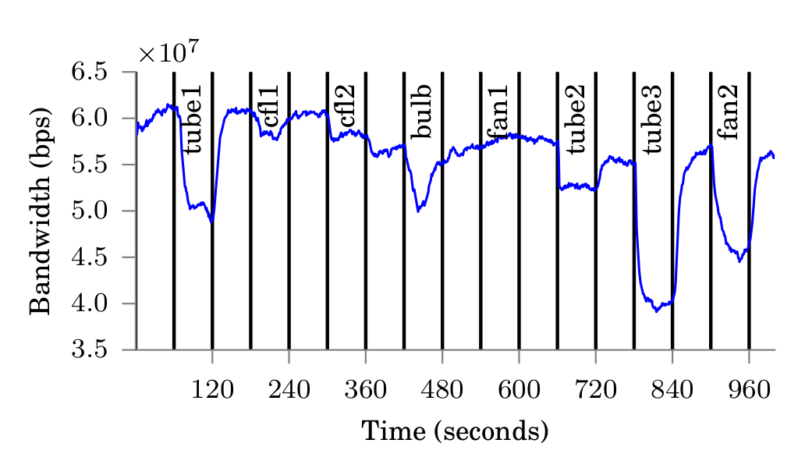

So, it is that time of the year again when Buildsys program is notified. Our research lab (which works primarily in energy sustainability and smart home applications) has expanded significantly since last year's Buildsys. This time we submitted a total of 5 papers, a poster and a demo. Given the really tough competition this time around, I think the group did a good job of getting 2 papers, a poster and a demo through. In this post I'll quickly discuss about the accepted work and why you should come and attend our talks/demos.
Manoj led this interesting paper. Previous work around 2010 had hypothesized that household appliances cause electromagnetic interference (EMI) on the power line and this can be exploited for appliance disaggregation (aka NILM). Fast forward to 2014- appliances have become better and would be expected to have lesser interference, extension cords in homes are increasingly coming with EMI suppressors. Would such an approach still work. This work presents answers to some pertinent questions such as:
I'll not disclose their results in this post to avoid killing the excitement! The authors also release simulation studies and their data set (HFED) collected in laboratory and residential settings.
Imagine that your university proposes a new rule to increase energy awareness. You won't be charged a fixed amount for your dorm electricity consumption- but would only need to pay for what you use. Interesting! But, surely, the university does not have the resources to instrument each and every dorm room. Here comes a work by Shailja and Manaswi done in collaboration with Yuvraj. Smartphones are getting ubiquitous and they can easily collect a lot of data! WattShare is a system which fuses information from smartphones (audio and WiFi) with the smart meter data to break down overall energy consumption in a dorm like setting. A week long experiment in a student dorm in our IIITD campus and the evaluation thereof, suggests that such a system can be viable for room level energy apportionment in commercial buildings which resemble the scenario used in this paper.
This is a work which I led and involved Manoj and Puneet from IIITD and Kamin Whitehouse from UVa. NILM techniques have been known for long. But, they are fairly limited in disaggregating low power appliances and multiple instances of similar appliances. How does powerline communication even come in the picture? We found that even a cheap COTS PLC worth 30 dollars (Yes! you read it right 30 dollars) can help when complex machine learning may fail. We use a simple system where we observe the change in throughput between two PLC modems as different appliances are used in a home. I'll let the following image speak for itself!

nilmtk simply rocked! Does it need any enhancements? Yup! nilmtk was limited in the amount of data it could process. It could only handle data sets which would fit in memory. Surely, this wasn't something we wanted. Particularly since Pecan Street research announced Wiki-Energy NILM data set which may not fit in a standard laptop's memory in the coming 10 years! So, nilmtk v0.2 was a complete rewrite of the initial version. It now comes with NILM-metadata which makes it way more efficient to handle the differences among different data sets. This paper involved a lot of effort from Jack while Oliver and I supported along.
Maybe, I have whetted your appetite? I'd be happy to hear any feedback.